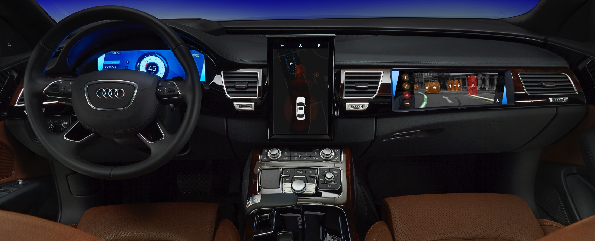

Designed and conducted end-user studies, presented findings to enable advanced development ideation process
Advanced Driver Assistance Systems Visualization
Design

Researched and chose three vehicles that implemented ADAS features and communication methods in different ways
Implementation
Recruited cross-section of experience levels and demographics to ensure quality. Each participant was recorded to gain insights via contextual inquiry.
Results
Findings were presented at Center for Automotive Research Management Briefing Seminars. They were also used to create uses cases and develop proofs of concepts for the following year and educate the internal team.
I designed and conducted this survey in 2016 to learn more about how users interact with the driver assistance features in their vehicles and to understand their preferences for how those systems communicate to the driver. The study consisted of driver’s using three vehicles, completing a short survey after each drive and then completing a comprehensive survey following all three drives. Each user was also filmed for review. The findings were used to develop future use cases and proofs of concepts and were presented at the Center for Automotive Research’s Management Briefing Seminar in 2016.